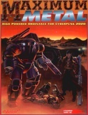

|  | Fiche technique |
| Supplément pour le jeu de rôles Cyberpunk 2020, édité par R. Talsorian Games (1993) | |
| Langue | Anglais |
| Thème | Règles concernant les véhicules |
| Qualité du background | 3 / 5 |
| Qualité des scénarii | - |
| Qualité des règles | 4 / 5 |
| Qualité des illustrations | 4 / 5 |
| Qualité de l'écriture | 3 / 5 |
Maximum Metal porte bien son nom. Il s'agit en effet d'étoffer les règles concernant les véhicules pour CP2020. Outre cela, ce supplément se concentre sur les véhicules militaires en particulier, ce qui n'a pas toujours beaucoup d'intérêt pour le MJ ne désirant pas tranformer sa campagne d'enquêtes psychologiques en champ de bataille. Ce supplément introduit les ACPA (armures individuelles à amplification de force, équivalent des landmates japonais) et une certaine quantité d'armement lourd. Outre les règles pour construire ses propres véhicules et ACPA, qui malheureusement comportent certaines incohérences, le supplément offre un grand catalogue de véhicules militaires. Dommage que tous ne soient pas illustrés, mais ceux qui le sont, le sont bien ce qui ne gâche rien. On peut aussi noter quelques règles optionnelles concernant les combats de véhicules à grande échelle. En résumé, la qualité de ce supplément est bonne, et les règles proposées sont intéressantes, mais il convient de noter que le matériel présenté est militaire, et peut être donc pas destiné à être utilisé quotidiennement dans le jeu.
{kind=link}